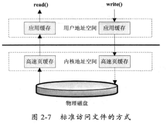
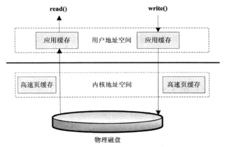
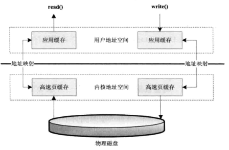

此为书籍第二章的知识点，由于这一章涉及比较多的是NIO的操作，我本人对NIO操作确实比较少，暂时还没什么感悟，所以此次只是记录知识点，如果有小伙伴想看的话不建议继续看下去，因为不完整，以后有时间深入了解一些NIO操作时候再来完善本文。
第二章
磁盘IO工作机制
读取和写入文件I/O操作都调用操作系统提供的接口。
几种访问文件的方式
1. 标准访问文件的方式
标准访问文件的方式就是当应用程序调用read()接口时，操作系统检查在内核的高速缓存中有没有需要的数据，如果已经缓存了，那么就直接从缓存中返回，如果没有，则从磁盘中读取，然后缓存在操作系统的缓存中。
写入的方式是，用户的应用程序调用wrrte()接囗将数据从用尸地址空间复制到内核地址空间的缓存中。这时对用户程序来说写操作就己经完成，至于什么时候再写到磁盘中由操作系统决定，除非显式地调用了sync同步命令。 如下图

2. 直接 I/O 的方式
所谓的直接I/O的方式就是应用程序直接访问磁盘数据，而不经过操作系统内核数据缓冲区，这样做的目的就是减少一次从内核缓冲区到用户程序缓存的数据复制。这种访问文件的方式通常是在对数据的缓存管理由应用程序实现的数据库管理系统中。
如在数据库管理系统中，系统明确地知道应该缓存哪些数据，应该失效哪些数据，还可以对一些热点数据做预加载，提前将热点数据加载到内存，可以加速数据的访问效率。
但是直接I/O也有负面影响，如果访问的数据不在应用程序缓存中，那么每次数据都会直接从磁盘进行加载，这种直接加载会非常缓慢。通常直接I/O与异步I/O结合使用，会得到比较好的性能。如下图：

3. 同步访问文件
同步访问文件的方式比较容易理解，就是数据的读取和写入都是同步操作的，它与标准访问文件的方式不同的是，只有当数据被成功写到磁盘时才返回给应用程序成功的标志。这种访问文件的方式性能比较差，只有在一些对数据安全性要求比较高的场景中才会使用，而且通常这种操作方式的硬件都是定制的。
4. 异步访问文件
异步访问文件的方式就是当访问数据的线程发出请求之后，线程会接着去处理其他事情，而不是阻塞等待，当请求的数据返回后继续处理下面的操作。这种访问文件的方式可以明显地提高应用程序的效率，但是不会改变访问文件的效率。
5. 内存映射的方式
内存映射的方式是指操作系统将内存中的某一块区域与磁盘中的文件关联起来，当要访问内存中的一段数据时，转换为访问文件的某一段数据。这种方式的目的同样是减少数据从内核空间缓存到用户空间缓存的数据复制操作，因为这两个空间的数据是共享的。
如图:

Java访问磁盘文件
数据在磁盘中的唯一最小描述就是文件，文件也是操作系统和磁盘驱动器交互的最小单元。值得注意的是，在Java中通常的File并不代表一个真实存在的文件对象，当你指定一个路径描述符时，它就会返回一个代表这个路径的虚拟对象，这个可能是一个真实存在的文件或者是一个包含多个文件的目录。在真正要读取这个文件时会检查文件是否存在。例如，FileInputStream类都是操作一个文件的接口，注意到在创建一个FileInputStream 对象时会创建一个FileDescrrptor 对象，其实这个对象就是真正代表一个存在的文件对象的描述。当我们在操作一个文件对象时可以通过getFD()方法获取真正操作的与底层操作系统相关联的文件描述·例如，可以调用FileDescriptor.sync() 方法将操作系统缓存中的数据强制刷新到物理磁盘中。
网络 I/O 工作机制
- 待写